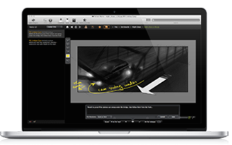
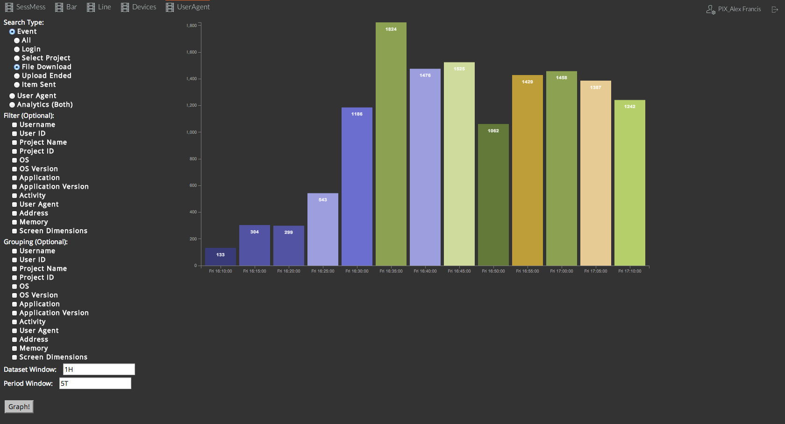

PIX System is a San Francisco based startup creating software for global collaboration and assert sharing amongst members of the filmmaking industry. PIX leaders found my background in statistics attractive, and placed me on a small team of developers working to create an internal service that tracked the flow of content between users in the system (the "PIX Analytics" project). In the technical implementation, I interfaced with client server data and entered it into MongoDB. I then created a simple RESTful API using Python Flask that used designated a system for generating custom requests based on URL. I then brought the project full circle by transforming the raw data to parsed data to a user-friendly visualization tool.